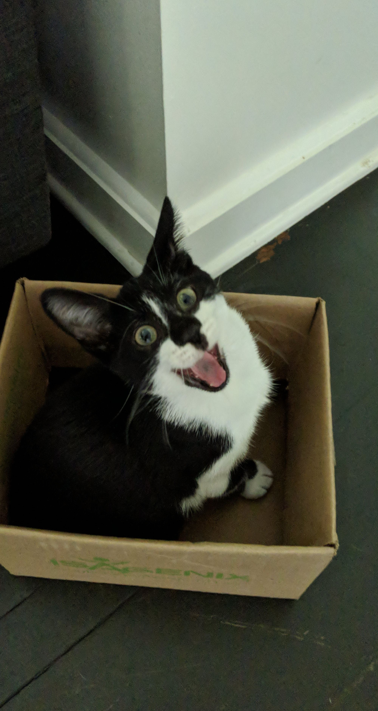

Hi, I'm JJ! I'm 21 years old and currently a college student at the Berklee College of Music studying Music Production & Engineering up in Boston, MA. I grew up in a small town off the central coast of New Jersey in the US with my older sister, younger brother, mom, dad, and various pets. I have a lot of hobbies outside of music like playing videogames and making art, but most of my free time goes towards in depth analyises of different sagas and stories from TV shows and movies i've watched or videogames i've played through, especially if theyre a whole franchise with different parts. I like to dig deep into plots of stories and characters and why the creators decided to make them the way they are. So I started this website to organize and publicly display my timelines, theories and anaylises. Right now I currently hold up waiting to graduate college with my beloved son (my cat named Mojo pictured below).
